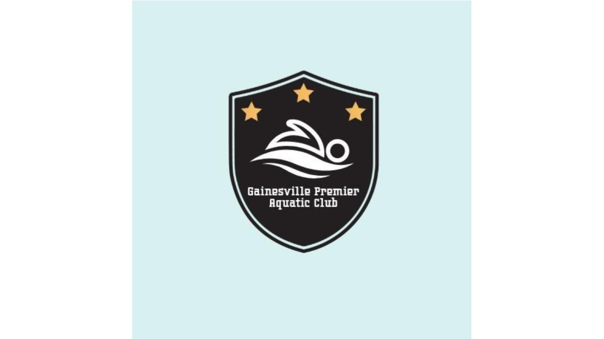
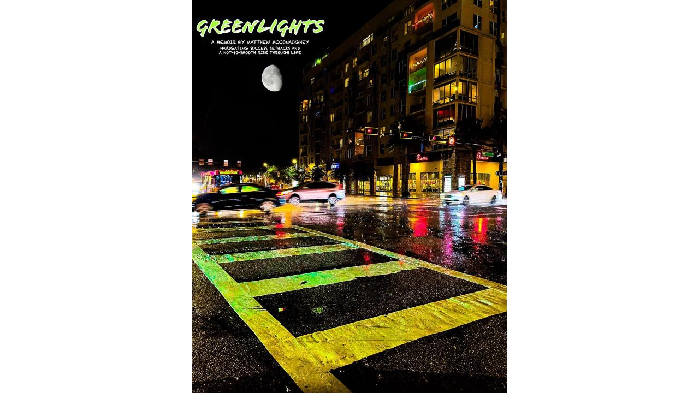

Logo & Book Cover
Book Cover: I chose Greenlights by Matthew McConaughey, and I used Photoshop Express to edit and manipulate the images and text. To start, I used a photo of a crosswalk I took on a rainy night last winter (I dabble in professional photography). I then used the Photoshop edit tools to change the hue, saturation and vibrance of the image, in order to enhance the green light from the traffic signal to the left of the photo. This made the green light reflect off the water on the ground and shine very bright. I thought this provided depth to the photo as well, connecting to the title of the book. I also used the edit tools to darken the black sky in the background to make the title pop-out a little more. For the title's font I chose something that was a little more rugged than the original font, and more cursive. I applied a green stroke that matched the green from the traffic light. I then chose a smaller, less rugged font for the sub-titles to provide some hierarchy and contrast between the two titles. I then thought the cover looked bare, and realized I needed one more image in the cover, so I added a free photo of the moon from Flicker. I removed the background (even though the background was black like the night sky in the original image), to ensure smooth application. I put the moon in the sky below to title to fill out the space, without making it feel too busy.
Logo: I used Adobe Express for this. I started by searching for shield images to serve as the backdrop of the logo. I then searched for a swimmer image and placed the swimmer in the middle of the shield to visually demonstrate that this was a swim-team insignia. I chose a small, yet strong font that could show the team's "premier" brand. Any other, perhaps more goofy or lighthearted, font would have been out of place. I then chose a light blue background color to emulate the water's color, while maintaining the strong, dark color of the shield. I placed three yellow stars at the top points of the shield to again speak to the team's top-level and premier branding.

